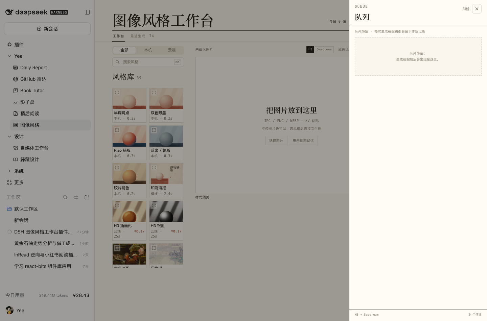
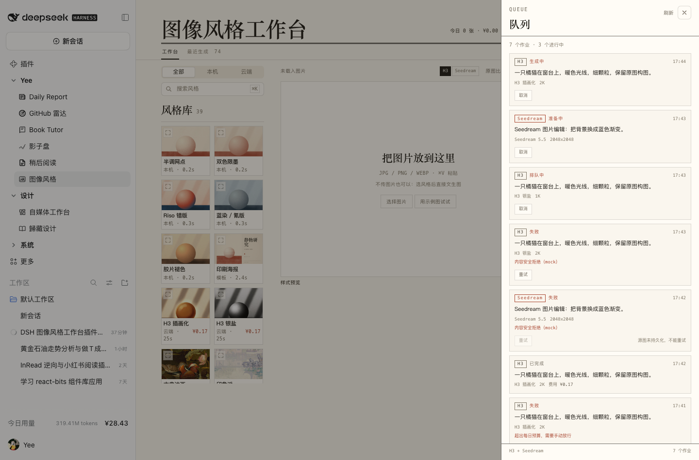
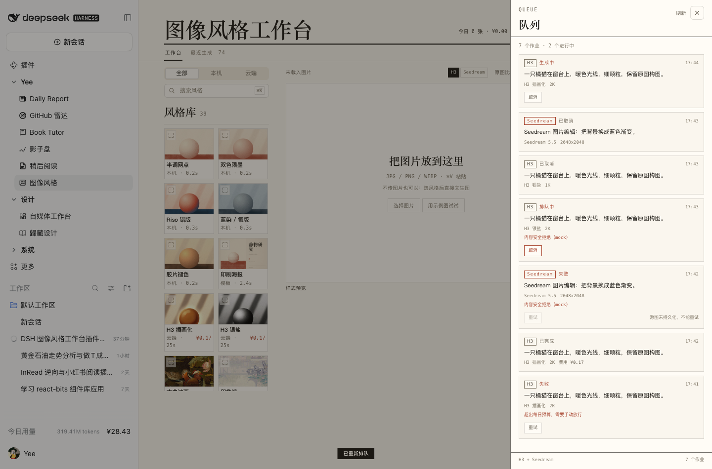

1. 真实 DSH GUI 打开图像风格面板2. 空队列时 badge 隐藏3. 打开队列抽屉显示空状态4. Escape 关闭后停止轮询5. 合并 H3 + Seedream 作业并按时间倒序6. provider 徽标与状态文案7. 成功作业显示实际费用8. 提示词摘要 / 时间 / 进行中计数与 badge9. 取消/重试按钮矩阵10. 抽屉打开时每 2 秒轮询11. 取消 queued H3 作业（cloud 端点）并刷新12. 取消 preparing Seedream 作业（seedream 端点）13. 取消 running 作业 409 → toast 且状态不变14. 重试 402 → toast 显示预算明细15. 失败 H3 作业重试成功并回到队列16. 关闭按钮停止轮询17. 点击遮罩关闭抽屉18. 刷新按钮重新拉取列表19. 无 pageerror20. cancel/retry 命中正确 provider 端点21. 零作业时 badge 清除

